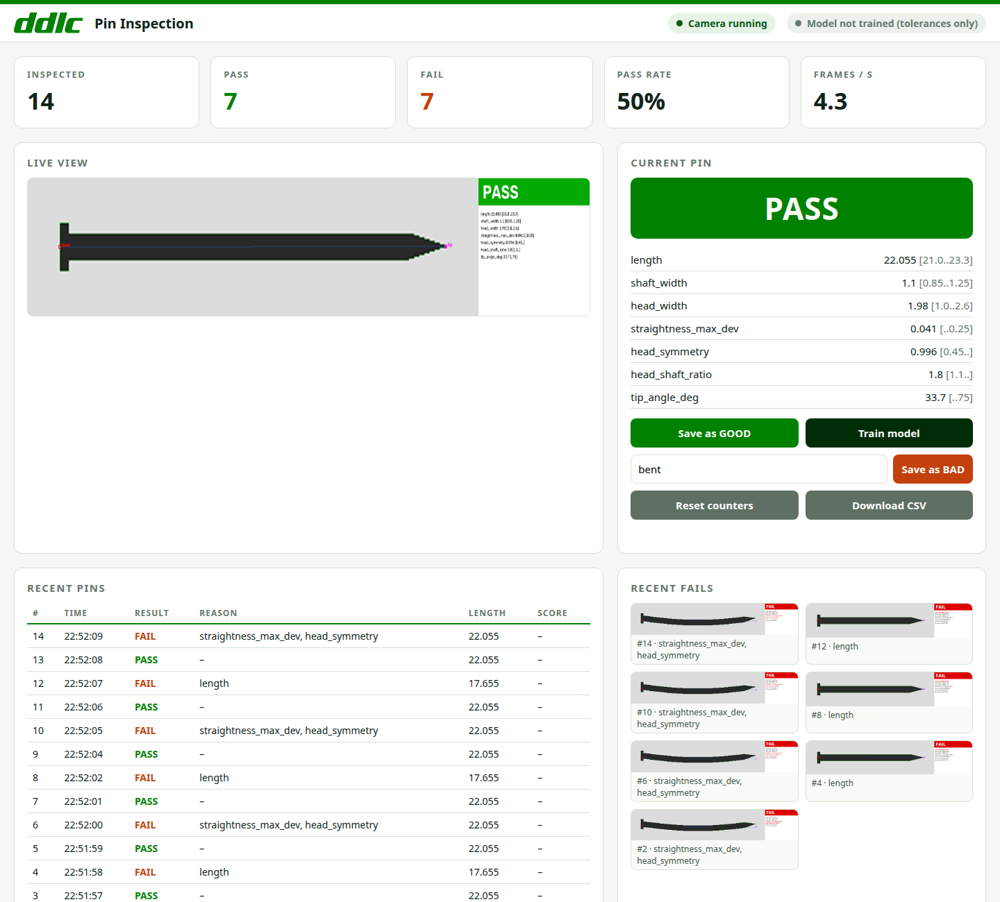

DDLC AI · Pin Inspection
AI vision quality control that runs on low-cost edge hardware, right on the production line.
Mohammed Sinan · DDLC AI · 2026
The problem
People can’t look closely at every pin at line speed.
Results change with who is checking, and when.
No data on what failed, why, or how often.
Our solution
A camera that checks every pin in real time, says PASS or FAIL, and tells you why.
No deep learning, no GPU, no library of defect photos needed.
How it works
A webcam above the line captures each pin.
Length, head, shaft, straightness and tip, in millimetres.
Learned from just 10–20 good pins.
PASS or FAIL, with the reason.
Runs on a Raspberry Pi 5 and a standard USB webcam.
The product

Why DDLC AI
| Manual check | Typical AI vision | DDLC AI | |
|---|---|---|---|
| Consistent results | No | Yes | Yes |
| Training data | — | Many defect photos | 10–20 good pins |
| Hardware | People | GPU workstation | Raspberry Pi 5 |
| Explains each fail | Sometimes | Rarely | Always |
| Remote monitoring | No | Varies | Built in |
Traction
Footwear identification on a factory conveyor: names the article out of about 200 styles and estimates its size.
Live footfall counting on an NVIDIA Jetson Orin Nano, counting the people moving through a site.
Both run around the clock, start on boot and are reachable securely from anywhere. Pin Inspection joins the same platform.
The platform
What’s next
On-board AI for heavier models
Runs straight from factory power
Proximity and photoelectric inputs, relay outputs
RGB matrix shows the DDLC logo, network and AI status
A supervisor chip keeps status running while the AI boots
CNC-machined aluminium enclosure
The vision
Pin inspection with a live dashboard on a Raspberry Pi 5
The same measure-and-compare approach for other small metal parts and connectors
DDLC AI V2 controllers, all monitored from one DDLC platform
Let’s put DDLC AI on your production line.
Thank you · Questions?